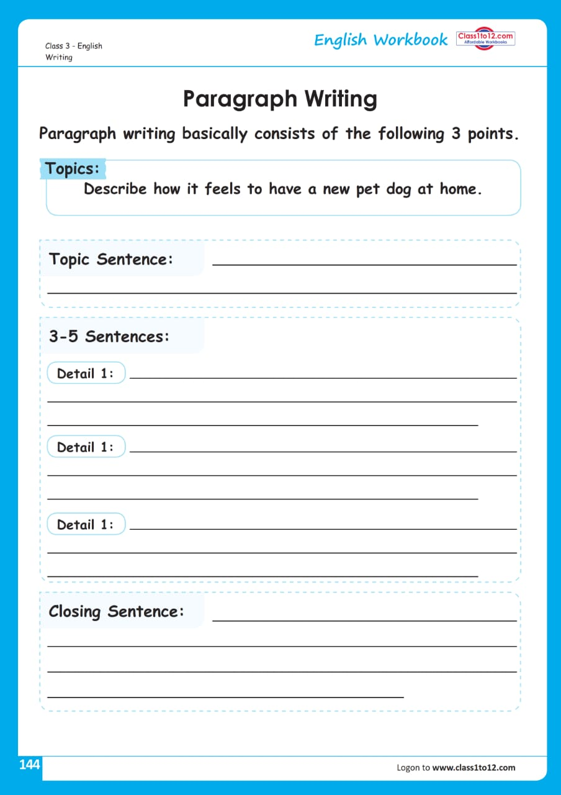

Paragraph Writing
Introduction & Techniques of Paragraph Writing
What is a Paragraph?
A paragraph is an important unit of composition. It is a group of sentences put in a systematic order. It may also be defined as a group of sentences that develops one particular idea. In other words, a paragraph develops a topic. Nowadays, a paragraph is treated as a type of short composition intended to be written by students. However, it should have a systematic beginning, middle, and conclusion. It can be an independent piece of writing on a particular topic or a part of a long composition.
• Let us note the following group of sentences:
- I am proud of being a student of this school.
- It is in the district of Mymensingh.
- The school is famous for its good teaching and good results in the O-LEVEL Examination.
- I read in James High School.
- It has a beautiful building and a large playground in front of it.
- If we examine the group of sentences stated above, we'll comment that this is not a paragraph because the sentences are not put in a systematic order and so the idea is not developed in an orderly manner.
Now, let us rearrange the sentences:
I read in James High School. It is in the district of Mymensingh. It was established in 1910. It has a beautiful building and a large playground in front of it. The school is famous for good teaching and good results in the O-LEVEL Examination. I am proud of being a student of this school.
After rearranging the group of sentences, we can easily agree that it has become a paragraph because here is a coherent arrangement of the sentences and the idea is developed in an orderly manner. It develops a topic. The topic is "The school I read in".
Types of Paragraphs
While the format of paragraphs should be similar, the type of paragraph will differ greatly depending on the type of writing being done. There are four common types of paragraphs and do not include paragraphs to separate dialogue. The table below gives details about the four types.
| Type of Paragraph | Description |
|---|---|
| Narrative | A narrative paragraph tells a story of a certain event and gives details that relate to the event being told. |
| Descriptive | A descriptive paragraph gives details about a person, place, thing, or idea. The topic sentence states what is being described and the details relate to that topic. |
| Expository | An expository paragraph gives information, explains something, gives directions, or shows how something happens. The detailed sentences in expository paragraphs often have linking words such as first, next, then, or after. |
| Argumentative | An argumentative paragraph, sometimes referred to as a persuasive paragraph, is where the topic sentence takes a specific position or request. The details are written to prove why the argument is valid. |
Format and Organization
A good paragraph consists of three important parts: the beginning, middle, and conclusion. These are the basic components of a paragraph. But a paragraph must be written as a single unit on a single idea.
The Beginning
The topic sentence usually forms the beginning of a paragraph. The sentence which reflects the topic of a paragraph is known as the topic sentence. It is usually the first sentence in a paragraph and is the most important sentence in it. A good topic sentence serves to introduce the topic and the controlling idea about the topic. Suppose, "Smoking Cigarettes" is the given topic of a paragraph to be written. In the beginning of the paragraph, we may write a sentence like "Smoking cigarettes is a bad habit". This is the topic sentence and "the bad habit of smoking cigarettes" is the controlling idea to which the writer will remain confined to write the paragraph. This idea will lead the writer to write the paragraph.
The Middle
The middle of a paragraph consists of the sentences placed between the topic sentence and the concluding sentence. These sentences develop the idea presented in the topic sentence by supporting, elaborating, and expanding it. The middle of a paragraph is also called the body of the paragraph.
The Conclusion
The last sentence in a paragraph usually serves as its conclusion. It logically concludes the idea developed in the middle of the paragraph. The beginning and the conclusion of a paragraph are related to each other, and there is a link between them.
Principles to Observe While Writing a Paragraph
- A paragraph must be written as a single unit.
- The sentences in a paragraph should be connected in a prosaic passage form; the sentences should not be detached from one another.
- The same point should not be repeated.
- It is better not to quote from any writer or philosopher.
- The sentences in a paragraph should be in the indirect speech.
- Though there is no hard and fast rule about the size of a paragraph, it may be limited to 100-150 words.
- All the sentences should be relevant to the topic of the paragraph.
- The sentences should be arranged in a proper and systematic order.
- The paragraph should be written in plain English with common and simple words.

Exercise:
Write paragraphs on the topics, given below by answering the questions put with them:
a) Your Mother
What is your mother's name? How old is she? What is her educational qualification? What is her profession? Where is her working station? What responsibilities does she perform for the family? What does she do for you on holidays?
b) Your Reading Room
What is a reading room? Do you have a reading room? Where is it situated? What is the size of your reading room? How many pieces of furniture are there? What other things are there? How is the environment of your reading room? How do you maintain it? How do you feel there?
c) Physical Exercise
What is physical exercise? Is it important? What is its relationship with health? What is the relation between mind and body? How does physical exercise keep both mind and body sound? How does it keep the body fit?
d) A Storm You Faced
Where did you face a storm? Where did your journey start? What was your destination? What was the weather like? Were you enjoying your journey? When did the weather become unfavorable? What did you witness during the storm? How did you feel during the storm?
e) A Street Beggar
Who is called a street beggar? Why does he/she choose begging? Where is a street beggar seen? What kind of clothes does he/she wear? How does a street beggar look? What does he/she do to convince people to give alms? How does he/she express gratitude when receiving alms?
f) Rice
What is rice? How many kinds of rice are there? Which are the rice-producing countries? What are the seasons for cultivating rice? What natural resources are needed to cultivate rice? Which country produces the maximum amount of rice? What is the importance of rice in Bangladesh?
g) The 21st February
What is the importance of the 21st February? When do people wake up on this day and why? How do they walk on this day? What do people put on their breast or shoulder? What song do they sing? Where do they go in procession? How do they express respect to the martyrs? Why do people arrange meetings and seminars?
h) A Railway Porter
Who is a railway porter? What kind of dress does he wear? What does he say to draw attention to passengers? What duties does he perform? How does he behave with passengers? How much is his income? How is his standard of living? What are your feelings about his life?
i) Friendship
What is friendship? How can one make friends? What is the condition of a friendless man? What is the social value of friendship? How can one retain friendship? What is the importance of friendship in human life?
j) A Rickshaw Puller
Who is a rickshaw puller? Is he literate or illiterate? How laborious is his work? How much does he earn? Where does he live? How does he maintain his family? What is his social status? Do you feel pity for him?
k) A Postman
Who is a postman? How literate is he? What kind of uniform does he wear? What is the nature of his job? How sincere is he in his job? What is his relationship with the people? What is the social importance of his service? What should we do for him?
l) A Village Fair
What is a village fair? Where does it usually take place? What is the occasion for a village fair? What items are displayed and sold there? What are the special attractions? How do children feel and what do they do in the fair? What is the importance of the fair for the villagers?
m) A Tea-Stall
What is a tea-stall? Where is it found? What kind of drink is tea? What are the opening and closing times of a tea stall? What sort of people come here? What kinds of discussions take place in a tea-stall? What is its social importance?
n) A Village Doctor
Who is a village doctor? What kind of dress does he wear? What are his qualifications? How much experience does he have in medicine? What is the necessity and importance of his services? How long does he work each day? What is his status in the village society? How do people behave with him?
o) A Fisherman
Who is a fisherman? Where does he live? What is the nature of his work? How much does he earn? How does he support his family? Is his life a happy one? How do you feel about his life?
p) Your Sick Friend
What is the name of your sick friend? What disease does he have? How long has he been suffering? Where is he admitted? How do the doctors treat him? How does he feel about his treatment? How do his parents feel? How do you feel about him?
q) Your Family
What is the name of your family? What type of family is it? How many members are in your family? Who is the head of the family? What is your father’s profession? What is your mother’s profession? What do your siblings do? How is the financial condition of your family? How do you feel about your family?
r) Leisure
What do you understand by leisure? Is leisure meaningless? What is the importance of leisure in life? How can you make provisions for leisure? Should you spend leisure doing nothing? How can you make it an opportunity for enjoyment? What are the best ways to use leisure?
s) The Computer
What is a computer? What kind of invention is it? In which country was it invented? How important is it in our life? In what ways does it benefit us? What is the condition of computer culture in Bangladesh?
t) Yourself
What is your name? When were you born? What is your age? What is your position among your siblings? What are your parents' names? What are their professions? How much do they love you? How many siblings do you have? What is your school's name? What class are you in? What is your position in class? What are your favorite hobbies and games?